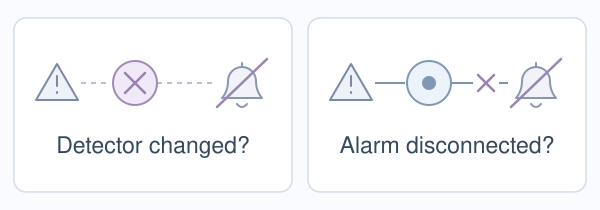

Causal decidability · Relevant use cases
What else could
explain the result?
Two findings. Two questions about what they mean.
Refusal: what function does a causal lever serve? CCS: what does an answer signal track? These literature examples illustrate the questions; they are not experiments performed with our method.
01 / Arditi et al. · Refusal · 2024
A causal lever is found.
Its meaning remains open.

Arditi et al. find one direction per model across 13 chat models: removing it suppresses refusal; adding it can induce refusal. The authors explicitly leave its meaning open. Like silencing an alarm: did detection change, or its influence on the response? To explain the direction’s function, we need to distinguish such alternatives. Causal Decidability makes this the next task: formulate rival explanations and identify separating tests. Zhao et al. already investigate a related distinction.
02 / Burns et al. · CCS · 2023
A signal predicts answers.
Whose judgement does it track?

Burns et al. learn an answer predictor from model activations without labelled training answers. Imagine a glowing film review—but Alice calls it negative. Does the signal follow the review or Alice? Farquhar et al. show it can follow Alice in specific settings. They already separate these targets by varying the review and Alice’s opinion independently. This illustrates the question I ask: which rival explanations can the design distinguish?